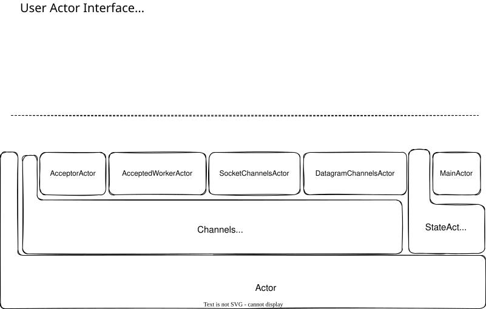
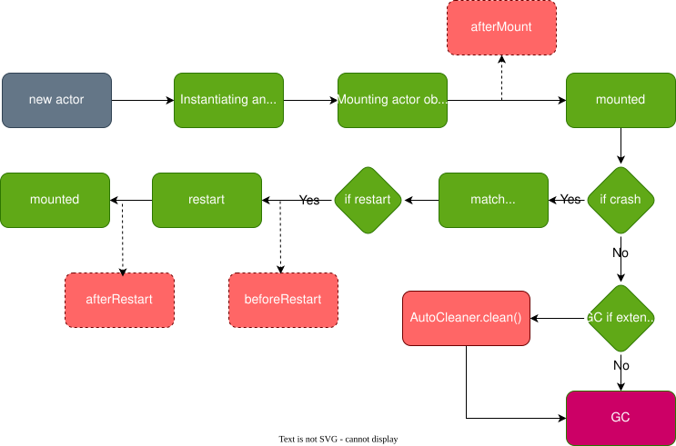

Actor Model
Actor Hierarchy
The actor type hierarchy has three main branches:
Actor[+M <: Call] (root trait)
└── AbstractActor[M <: Call] (engine: FutureDispatcher and message dispatch)
├── StateActor[M <: Call] (pure business logic, no IO)
│ └── MainActor (entry point, auto-sends Args notice after mount)
└── ChannelsActor[M <: Call] (IO-capable actor, manages Channel instances)
├── AcceptorActor[W] (TCP server acceptor)
├── AcceptedWorkerActor[M] (handles accepted connections)
├── SocketChannelsActor[M] (TCP client)
└── DatagramChannelsActor[M] (UDP)

AbstractActor Engine
AbstractActor is the central engine that bridges messages to the Stack-based execution model. It extends FutureDispatcher, a custom hash table for tracking in-flight promises.
Receiving Messages
When a message arrives, ActorHouse.run() dispatches it to AbstractActor:
Notice (receiveNotice): Extracts the Notice from the Envelope, recycles the Envelope, gets a NoticeStack from the object pool, and calls dispatchNoticeStack.
Ask (receiveAsk): Extracts the Ask, gets an AskStack from the pool, stores sender address and askId from the Envelope (before recycling it), then calls dispatchAskStack.
Reply (receiveReply): Extracts the Reply and replyId, looks up the corresponding MessagePromise in the FutureDispatcher hash table, pops it, and calls handlePromiseCompleted to resume the suspended Stack.
Event (receiveEvent): Pattern matches on event type:
AskTimeoutEvent→ pops the promise, sets failure withTimeoutReplyTimeoutEvent→ calls user-definedhandleActorTimeoutChannelTimeoutEvent→ delegates to channelReactorEvent→ delegates toChannelsActor
Mailbox Dispatch Order
ActorHouse has five separate mailboxes, processed in strict priority order:
- Replies (replyMailbox) - Always drained first, resumes suspended Stacks
- Exceptions (exceptionMailbox) - Error responses, also release barriers
- Asks (askMailbox) - Only if not in barrier mode
- Notices (noticeMailbox) - Only if not in barrier mode
- Events (eventMailbox) - Always dispatched regardless of barrier state
For ChannelsActor, channel pending futures and later tasks are processed after events.
ActorHouse State Machine
Each Actor is wrapped in an ActorHouse, which manages its lifecycle:
CREATED(0) → MOUNTING(1) → WAITING(2) → READY(3) → SCHEDULED(4) → RUNNING(5)
- CREATED → MOUNTING: Actor is first created
- MOUNTING → WAITING: Actor is mounted, lifecycle properties set
- WAITING → READY: A message/event arrives (CAS transition)
- READY → SCHEDULED: Pulled from the scheduling queue
- SCHEDULED → RUNNING: About to be executed
After run() completes, completeRunning() transitions to:
- READY (re-enqueue) if more messages exist
- WAITING if empty (with a race-condition re-check)
High Priority
An Actor becomes high priority when:
- Reply mailbox has more than 2 messages
- Event mailbox has more than 4 messages
stackEndRate(sent/received ratio) is less than 3 (waiting on many replies)
High-priority actors are placed in a separate sub-queue and always processed before normal-priority actors.
Barrier Mechanism
When an Ask message is marked as a barrier (isBarrierCall), the actor enters inBarrier mode. No additional asks or notices are processed until a reply or event clears the barrier. This ensures atomic ordering guarantees.
Batch Processing
When batchable == true, ActorHouse collects messages matching batchAskFilter/batchNoticeFilter into a buffer and dispatches them as a single BatchAskStack/BatchNoticeStack. Messages not passing the filter are dispatched individually.
StateActor
StateActor[M <: Call] is a pure business-logic actor. It cannot manage Channels (it throws UnsupportedOperationException on channel dispatch). Use it for state management, message processing, and timer interactions.
ChannelsActor
ChannelsActor[M <: Call] extends StateActor with IO capabilities. It can create channels via createChannelAndInit(). It receives ReactorEvents from the thread's IoHandler and dispatches them to the appropriate channel.
AcceptorActor
Server-side actor for accepting TCP connections. On mount:
- Creates a pool of
AcceptedWorkerActorinstances - Binds a
ServerSocketChannel - When a connection is accepted, wraps it in an
AcceptedChannelmessage and sends to a worker
AcceptedWorkerActor
Handles accepted channels from AcceptorActor:
- Receives
AcceptedChannelAsk - Mounts the channel and initializes the pipeline
- Registers the channel with the thread's
IoHandler
SocketChannelsActor
Manages TCP client channels. Use for outbound TCP connections.
DatagramChannelsActor
Manages UDP channels.
Actor Lifecycle
The entire lifecycle is managed by the runtime:

Lifecycle Hooks
afterMount(): Called after the Actor is mounted to theActorSystem. Runtime properties (logger,context,address) are available.beforeRestart(): Called before restart.restart(): The restart method itself.afterRestart(): Called after restart.
AutoCleanable
If your Actor holds unsafe resources, extend AutoCleanable and implement the cleaner method. The cleaner creates an ActorCleaner that uses JVM phantom references to detect when the Actor is garbage collected and to clean up resources.
Warning: The ActorCleaner must NOT hold a reference to the Actor or its Address, or the Actor will never be garbage collected.